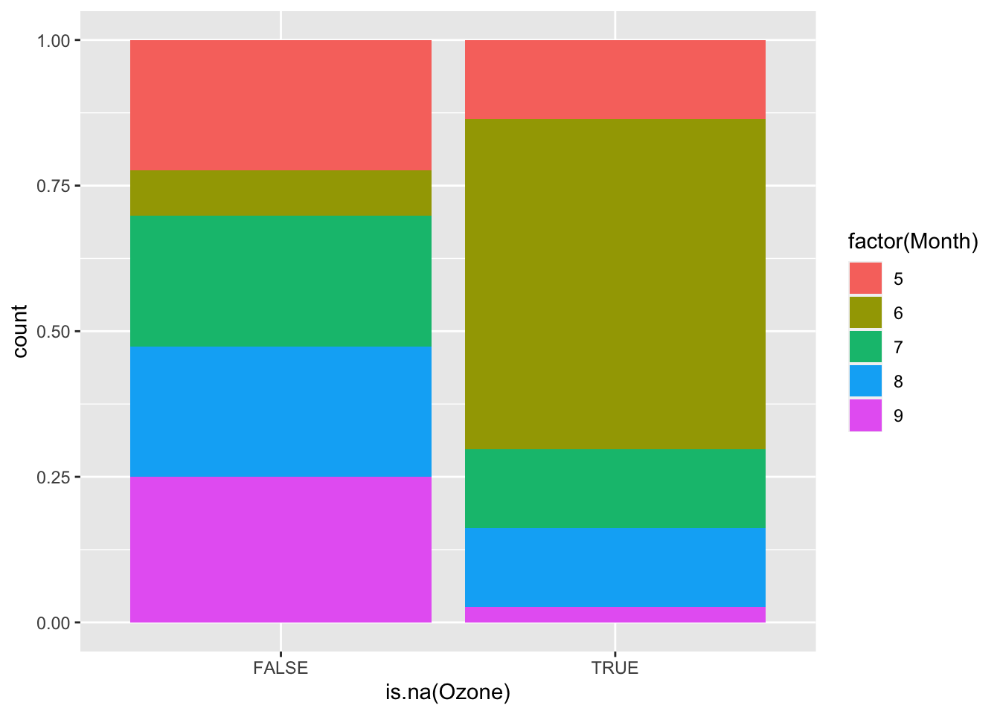

library(tidyverse)
library(naniar)Missing data (Part 1)
Learning goals
- Create tables and plots that explore the distribution of missing data across variables and cases
- Create plots that explore missing data patterns in a way that guides construction of imputation models
You can download a template Quarto file to start from here. Save this template within the following directory structure:
your_course_foldermissing_datacode14-missing-data-1.qmd
Introduction to missing data
Missing values are values that should have been recorded but were not.
The Missing Book (Chapter 1)
Context matters! If you’re able to get insight into the data collection process, you might be able to fill in (impute) missing values. In the context below, we see that none of the count values are zero. This might lead us to ask the data collectors about their process, and we might learn that they left spreadsheet cells blank when the count was zero. Thus, we could impute zeros for the NA values.
# A tibble: 6 × 1
count
<dbl>
1 NA
2 10
3 34
4 17
5 NA
6 20On the other hand, below we have zeroes along with NA’s, so the hypothesis of “NA means 0” is probably not correct. We would still want to ask the data collectors about their process.
# A tibble: 6 × 1
count
<dbl>
1 NA
2 10
3 0
4 17
5 NA
6 0The visual inspection that we did with the NA’s above is one way to explore missing data. Exploring patterns in missing data is essential for better understanding our data as a whole and for guiding how we might impute that missing data.
R objects that resemble NA
In R, missing values are encoded with NA. There are special class-specific versions of NA:
NAfor logicalNA_character_for charactersNA_integer_for integer valuesNA_real_for doubles (numbers with decimal points)
NaN (not a number) is a special value in R that results in these types of mathematical operations:
sqrt(-1)Warning in sqrt(-1): NaNs produced[1] NaNlog(-1)Warning in log(-1): NaNs produced[1] NaNEven though NaN isn’t the same as NA, NaN is represented as a missing value in R. The is.nan() function can help you spot NaN’s versus NA’s.
is.na(sqrt(-1))Warning in sqrt(-1): NaNs produced[1] TRUEis.nan(sqrt(-1))Warning in sqrt(-1): NaNs produced[1] TRUEis.nan(NA)[1] FALSEInf (infinity) is also a special value in R:
log(0)[1] -Inf-log(0)[1] InfNULL represents an empty value:
c(1, 5, NULL)[1] 1 5c(1, 5, NA)[1] 1 5 NAWhen displaying data frames in an R notebook, the Console, or with View(), it is impossible to differentiate between NA and "NA" (actual missing value vs. a string). To check for this possibility, you’ll want to use a combination of is.na() and =="NA":
x <- "NA"
is.na(x)[1] FALSEx=="NA"[1] TRUEExploring missing data
We’ll look at the airquality dataset available in base R, which gives daily air quality measurements in New York in summer 1973. You can pull up the codebook with ?airquality in the Console.
data(airquality)We can explore how much missing data there is for each variable with the following functions:
vis_miss(airquality)
gg_miss_var(airquality)
miss_var_summary(airquality)# A tibble: 6 × 3
variable n_miss pct_miss
<chr> <int> <dbl>
1 Ozone 37 24.2
2 Solar.R 7 4.58
3 Wind 0 0
4 Temp 0 0
5 Month 0 0
6 Day 0 0 We can explore missingness by case with miss_case_summary(). For each case, this function calculates the number and percentage of variables with a missing value. If the pct_miss column is large for a case, we likely won’t be able to impute its missing values because there just isn’t enough known information.
miss_case_summary(airquality)# A tibble: 153 × 3
case n_miss pct_miss
<int> <int> <dbl>
1 5 2 33.3
2 27 2 33.3
3 6 1 16.7
4 10 1 16.7
5 11 1 16.7
6 25 1 16.7
7 26 1 16.7
8 32 1 16.7
9 33 1 16.7
10 34 1 16.7
# ℹ 143 more rowsA useful way to explore missing data is by creating TRUE/FALSE indicators of whether a variable is missing. In the plots below, we use is.na(Ozone) to explore whether cases with missing ozone values are noticeably different from cases with observed ozone values.
ggplot(airquality, aes(x = is.na(Ozone), y = Solar.R)) +
geom_boxplot()Warning: Removed 7 rows containing non-finite values (`stat_boxplot()`).
ggplot(airquality, aes(x = Solar.R, color = is.na(Ozone))) +
geom_density()Warning: Removed 7 rows containing non-finite values (`stat_density()`).
The above boxplots and density plots suggest that days that are missing ozone levels don’t have particularly different solar radiation levels than days that aren’t missing ozone levels. We can see this in another way with the scatterplot below. The scatterplot helps us see the relationship between ozone and solar radiation, and overlaying the solar radiation values for the days missing ozone (in blue) helps us see that those missing cases are fairly evenly distributed across the horizontal range.
ggplot(airquality, aes(x = Solar.R, y = Ozone, color = is.na(Ozone))) +
geom_point() +
geom_smooth() +
geom_point(data = airquality %>% filter(is.na(Ozone)), mapping = aes(x = Solar.R, y = 175))`geom_smooth()` using method = 'loess' and formula = 'y ~ x'Warning: Removed 42 rows containing non-finite values (`stat_smooth()`).Warning: Removed 42 rows containing missing values (`geom_point()`).Warning: Removed 2 rows containing missing values (`geom_point()`).What if the scatterplot instead looked like this? What concerns might arise from using the smooth red curve as a means for predicting (imputing) the missing values? Write a few sentences. Then discuss with your group mates.
`geom_smooth()` using method = 'loess' and formula = 'y ~ x'Warning: Removed 42 rows containing non-finite values (`stat_smooth()`).Warning: Removed 42 rows containing missing values (`geom_point()`).Warning: Removed 2 rows containing missing values (`geom_point()`).Exercise
In the air quality dataset, ozone has the most missing data. Do days with missing ozone tend to be in certain months? On certain days of the month? On days with certain temperatures or wind speeds? Does it look like a linear regression model (perhaps with variable transformations) could be effective in imputing the missing ozone data? Create plots to investigate the answers to these questions.
Solution
ggplot(airquality, aes(fill = factor(Month), x = is.na(Ozone))) +
geom_bar(position = "fill")
Pair programming exercise
Whoever has most recently cooked a meal will drive first. Switch driver and navigator roles for the second part.
- Write the pseudocode for a function
impute_linmod()that imputes missing data using linear regression. Try to be as detailed as you can with the pseudocode in anticipation of full implementation in the next part.- Example usage:
impute_linmod(data = airquality, formula = Ozone ~ Wind+Temp)
- Example usage:
- Write the full code for the
impute_linmod()function.- An object that looks like
y ~ x1 + x2is called a formula object. - If
formis a formula object, it can be used insidelm()like this:lm(form, data = your_data). - If
modis the result of callinglm(), you can get predictions from the model usingpredict(mod, newdata = your_data).
- An object that looks like
Solution
impute_linmod <- function(data, formula) {
mod <- lm(formula, data = data)
pred <- predict(mod, newdata = data)
formula_chr <- as.character(formula)
response_var <- formula_chr[2]
var_with_nas <- data[[response_var]]
imputed_var <- if_else(is.na(var_with_nas), pred, var_with_nas)
data[[response_var]] <- imputed_var
data
}
impute_linmod(data = airquality, formula = Ozone ~ Wind+Temp) Ozone Solar.R Wind Temp Month Day
1 41.000000 190 7.4 67 5 1
2 36.000000 118 8.0 72 5 2
3 12.000000 149 12.6 74 5 3
4 18.000000 313 11.5 62 5 4
5 -11.676727 NA 14.3 56 5 5
6 28.000000 NA 14.9 66 5 6
7 23.000000 299 8.6 65 5 7
8 19.000000 99 13.8 59 5 8
9 8.000000 19 20.1 61 5 9
10 29.661896 194 8.6 69 5 10
11 7.000000 NA 6.9 74 5 11
12 16.000000 256 9.7 69 5 12
13 11.000000 290 9.2 66 5 13
14 14.000000 274 10.9 68 5 14
15 18.000000 65 13.2 58 5 15
16 14.000000 334 11.5 64 5 16
17 34.000000 307 12.0 66 5 17
18 6.000000 78 18.4 57 5 18
19 30.000000 322 11.5 68 5 19
20 11.000000 44 9.7 62 5 20
21 1.000000 8 9.7 59 5 21
22 11.000000 320 16.6 73 5 22
23 4.000000 25 9.7 61 5 23
24 32.000000 92 12.0 61 5 24
25 -16.864178 66 16.6 57 5 25
26 -9.829664 266 14.9 58 5 26
27 9.413045 NA 8.0 57 5 27
28 23.000000 13 12.0 67 5 28
29 45.000000 252 14.9 81 5 29
30 115.000000 223 5.7 79 5 30
31 37.000000 279 7.4 76 5 31
32 46.223505 286 8.6 78 6 1
33 35.501750 287 9.7 74 6 2
34 3.065356 242 16.1 67 6 3
35 55.431283 186 9.2 84 6 4
36 59.104756 220 8.6 85 6 5
37 30.647385 264 14.3 79 6 6
38 29.000000 127 9.7 82 6 7
39 67.979449 273 6.9 87 6 8
40 71.000000 291 13.8 90 6 9
41 39.000000 323 11.5 87 6 10
42 66.798557 259 10.9 93 6 11
43 70.152713 250 9.2 92 6 12
44 23.000000 148 8.0 82 6 13
45 34.015309 332 13.8 80 6 14
46 39.202760 322 11.5 79 6 15
47 21.000000 191 14.9 77 6 16
48 37.000000 284 20.7 72 6 17
49 20.000000 37 9.2 65 6 18
50 12.000000 120 11.5 73 6 19
51 13.000000 137 10.3 76 6 20
52 51.410955 150 6.3 77 6 21
53 63.626035 59 1.7 76 6 22
54 54.765111 91 4.6 76 6 23
55 49.570777 250 6.3 76 6 24
56 42.536263 135 8.0 75 6 25
57 48.056799 127 8.0 78 6 26
58 31.828276 47 10.3 73 6 27
59 41.042939 98 11.5 80 6 28
60 25.133733 31 14.9 77 6 29
61 57.257693 138 8.0 83 6 30
62 135.000000 269 4.1 84 7 1
63 49.000000 248 9.2 85 7 2
64 32.000000 236 9.2 81 7 3
65 50.236948 101 10.9 84 7 4
66 64.000000 175 4.6 83 7 5
67 40.000000 314 10.9 83 7 6
68 77.000000 276 5.1 88 7 7
69 97.000000 267 6.3 92 7 8
70 97.000000 272 5.7 92 7 9
71 85.000000 175 7.4 89 7 10
72 53.584220 139 8.6 82 7 11
73 10.000000 264 14.3 73 7 12
74 27.000000 175 14.9 81 7 13
75 50.896236 291 14.9 91 7 14
76 7.000000 48 14.3 80 7 15
77 48.000000 260 6.9 81 7 16
78 35.000000 274 10.3 82 7 17
79 61.000000 285 6.3 84 7 18
80 79.000000 187 5.1 87 7 19
81 63.000000 220 11.5 85 7 20
82 16.000000 7 6.9 74 7 21
83 48.383001 258 9.7 81 7 22
84 44.723296 295 11.5 82 7 23
85 80.000000 294 8.6 86 7 24
86 108.000000 223 8.0 85 7 25
87 20.000000 81 8.6 82 7 26
88 52.000000 82 12.0 86 7 27
89 82.000000 213 7.4 88 7 28
90 50.000000 275 7.4 86 7 29
91 64.000000 253 7.4 83 7 30
92 59.000000 254 9.2 81 7 31
93 39.000000 83 6.9 81 8 1
94 9.000000 24 13.8 81 8 2
95 16.000000 77 7.4 82 8 3
96 78.000000 NA 6.9 86 8 4
97 35.000000 NA 7.4 85 8 5
98 66.000000 NA 4.6 87 8 6
99 122.000000 255 4.0 89 8 7
100 89.000000 229 10.3 90 8 8
101 110.000000 207 8.0 90 8 9
102 71.986008 222 8.6 92 8 10
103 52.084011 137 11.5 86 8 11
104 44.000000 192 11.5 86 8 12
105 28.000000 273 11.5 82 8 13
106 65.000000 157 9.7 80 8 14
107 39.202760 64 11.5 79 8 15
108 22.000000 71 10.3 77 8 16
109 59.000000 51 6.3 79 8 17
110 23.000000 115 7.4 76 8 18
111 31.000000 244 10.9 78 8 19
112 44.000000 190 10.3 78 8 20
113 21.000000 259 15.5 77 8 21
114 9.000000 36 14.3 72 8 22
115 28.481005 255 12.6 75 8 23
116 45.000000 212 9.7 79 8 24
117 168.000000 238 3.4 81 8 25
118 73.000000 215 8.0 86 8 26
119 73.486217 153 5.7 88 8 27
120 76.000000 203 9.7 97 8 28
121 118.000000 225 2.3 94 8 29
122 84.000000 237 6.3 96 8 30
123 85.000000 188 6.3 94 8 31
124 96.000000 167 6.9 91 9 1
125 78.000000 197 5.1 92 9 2
126 73.000000 183 2.8 93 9 3
127 91.000000 189 4.6 93 9 4
128 47.000000 95 7.4 87 9 5
129 32.000000 92 15.5 84 9 6
130 20.000000 252 10.9 80 9 7
131 23.000000 220 10.3 78 9 8
132 21.000000 230 10.9 75 9 9
133 24.000000 259 9.7 73 9 10
134 44.000000 236 14.9 81 9 11
135 21.000000 259 15.5 76 9 12
136 28.000000 238 6.3 77 9 13
137 9.000000 24 10.9 71 9 14
138 13.000000 112 11.5 71 9 15
139 46.000000 237 6.9 78 9 16
140 18.000000 224 13.8 67 9 17
141 13.000000 27 10.3 76 9 18
142 24.000000 238 10.3 68 9 19
143 16.000000 201 8.0 82 9 20
144 13.000000 238 12.6 64 9 21
145 23.000000 14 9.2 71 9 22
146 36.000000 139 10.3 81 9 23
147 7.000000 49 10.3 69 9 24
148 14.000000 20 16.6 63 9 25
149 30.000000 193 6.9 70 9 26
150 30.328067 145 13.2 77 9 27
151 14.000000 191 14.3 75 9 28
152 18.000000 131 8.0 76 9 29
153 20.000000 223 11.5 68 9 30Exercise
Brainstorm some ways that you could evaluate the quality of the imputations using plots. Try making some of these plots to check your intuition.